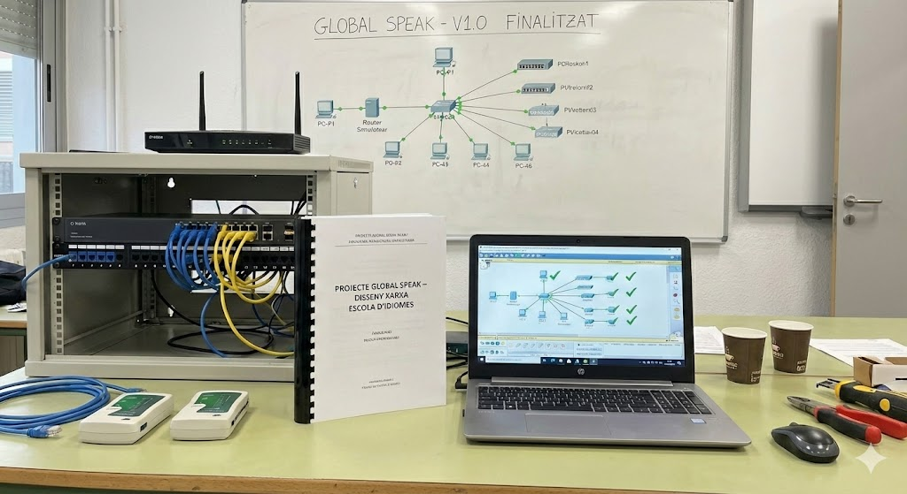

Global Speak (TR batxillerat)
Descripció General
Aquest va ser el projecte final de la meva etapa a batxillerat, no vaig ser l'unic en participar, també em va ajudar el meu profesor de TR
Aquest va ser el projecte final de la meva etapa a batxillerat, no vaig ser l'unic en participar, també em va ajudar el meu profesor de TR